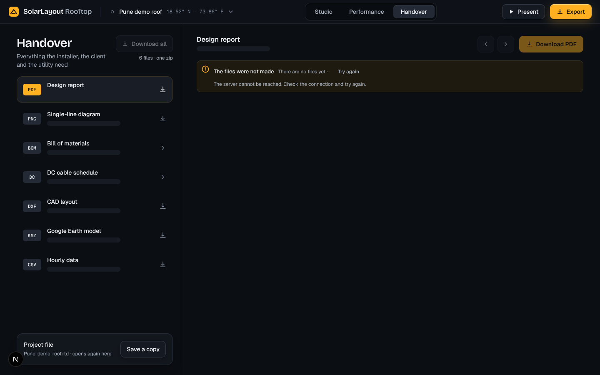
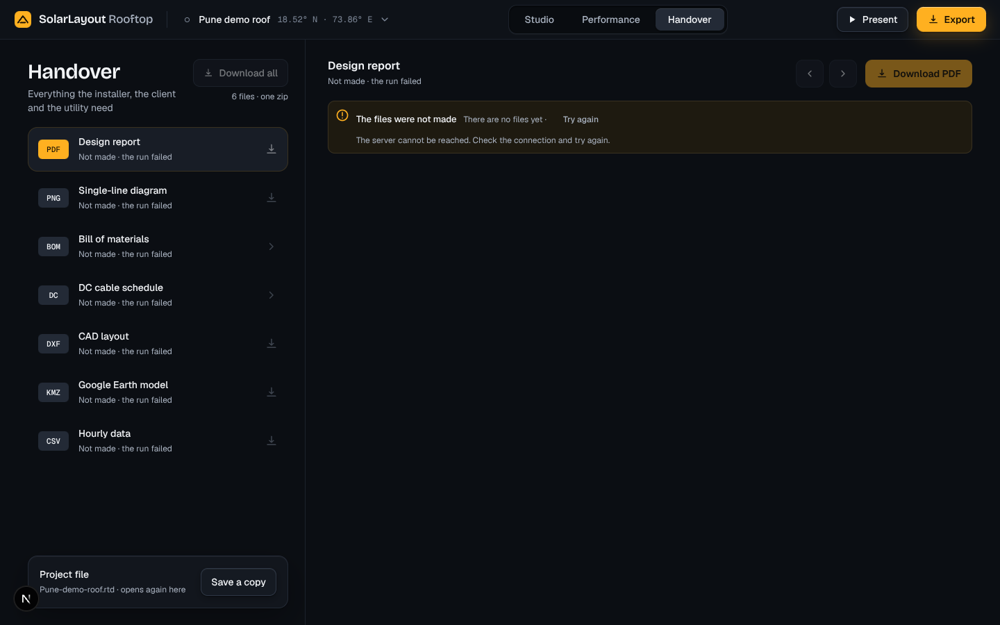

When a design's first run fails, Handover has no files to show. Its previews now show the note “The files were not made · There are no files yet · Try again” alone (#205), but each row's facts still breathe as if the run were on its way, and on phone, where the list is the whole page, there is no note and no Try again. Proposed, as before options, where each row carries the API's title: each row that waits says “Not made · the run failed”, its download icon dim; the preview's head says the same. On phone the note with Try again stands under the list's head, as it stands under the head of an item.
When: the run failed and there is no design of before. A run that fails after one that worked keeps the files of before and their facts, as today. The project file is never waiting: it keeps its own facts. Desktop: the list beside the first item.

